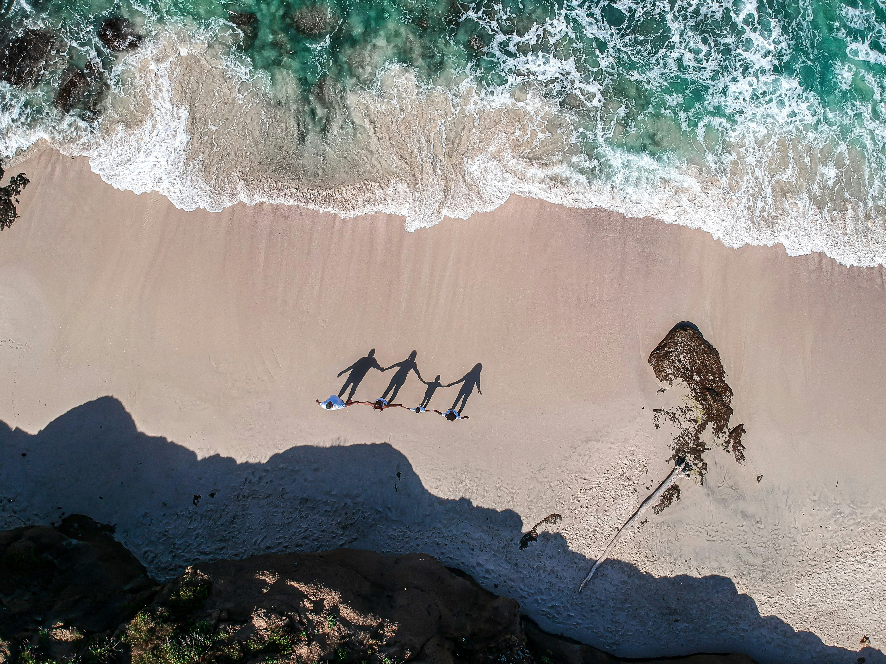
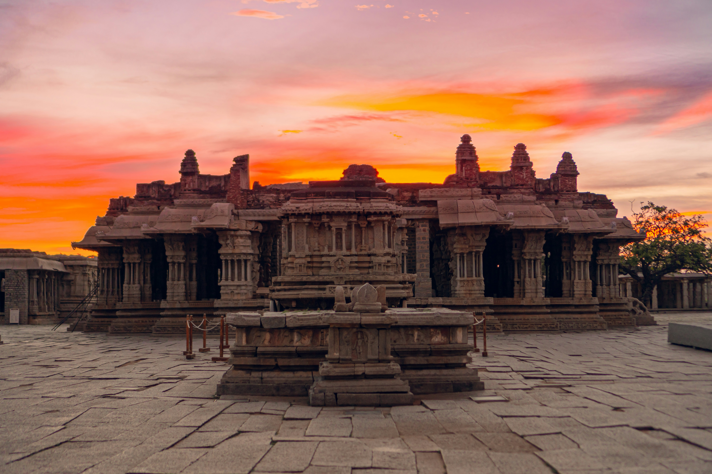
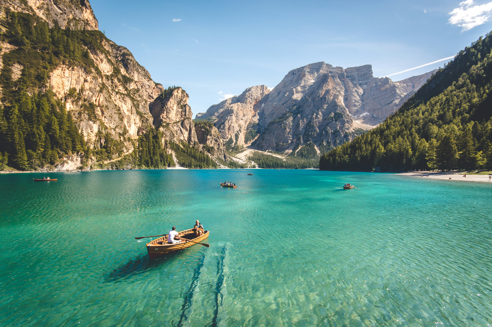
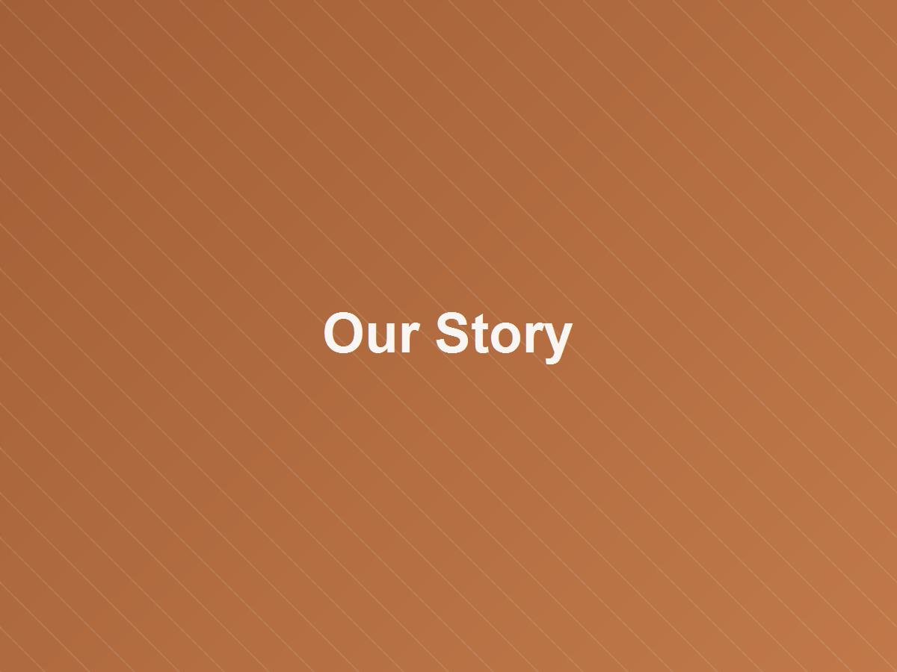
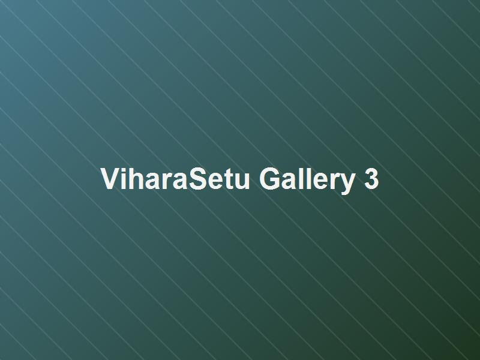

ViharaSetu
"A bridge between travelers, destinations, culture and meaningful experiences."
Three Friends. One Passion. A Bridge to Your Dreams.
Every journey begins with a dream. For us, that dream began with three friends who simply loved to travel.
We travelled together, explored new places, experienced different cultures, discovered beautiful destinations, and created memories that stayed with us long after we returned home.
Along the way, we realised something — there are so many people who dream of travelling, but don't know where to start. Some struggle with planning. Some worry about budgets. Some don't know which places to visit. Some want to travel with family. Some dream of a spiritual journey. And some are simply waiting for the right opportunity.
So we thought — why not help people turn those dreams into journeys? And that's how ViharaSetu began, on 20 February 2026.

The Purpose Behind It
The name ViharaSetu represents what we want to be — a bridge between your dreams and the destinations you've always wanted to experience. From spiritual journeys to family holidays. From trips with friends to Himalayan adventures. From weekend escapes to long-awaited dream vacations.
We want to make travel simple, comfortable, meaningful and accessible. We don't want to just sell you a package — we want to understand your dream, plan your journey, and be there along the way.
Because we believe every traveller has a story waiting to be written. And maybe your next chapter begins with a journey.
Meaningful, Memorable & Responsible Travel
To create travel experiences that are meaningful for the traveler, memorable for the right reasons, and responsible toward the destinations and communities that make them possible.
Experiences We're Building
ViharaSetu is designed around categories of travel that go beyond the ordinary itinerary.
Travel Packages
Curated multi-day journeys designed around destinations and experiences, not just logistics.
Spiritual Journeys
Trips centered around monasteries, temples and places of spiritual significance.
Cultural Experiences
Immersive experiences with local communities, traditions and ways of life.
Trekking & Adventure
Guided treks and adventure travel across mountain regions.
Customized Trips
Personalized itineraries built around individual travelers' interests and pace.
Heritage Travel
Journeys built around history, architecture and heritage sites.
Destination Experiences
Deep-dive experiences into a single destination, rather than a rushed multi-city tour.
My Connection to ViharaSetu
I'm T Devamani Raju, one of the three friends behind ViharaSetu. By profession, I work as a Data Engineer — but travel and trekking have been a constant thread through my life, and ViharaSetu is where that passion, shared with Sateesh R and Devi K, is finding a more structured, intentional form.
My love for travel has always pulled me toward two things — the quiet stillness of spiritual and heritage places, and the raw, humbling scale of the mountains. There's something about standing before a temple that has outlived generations, or looking up at a peak that makes your problems feel small, that stays with you long after the trip ends. Every such journey has left me a little more grounded, and a little more curious about what else is out there.
That was the same pull I saw in Sateesh and Devi every time the three of us traveled together — a shared draw toward places that hold meaning, not just a stop on an itinerary. Somewhere between those trips and countless conversations about the journeys we wished more people could experience, the idea for ViharaSetu started to take shape. We didn't set out to build a company; we set out to make it easier for others to feel what we felt.
Today, alongside my work as a Data Engineer, I play an active role in shaping ViharaSetu's spiritual, heritage and mountain travel experiences — the categories closest to my own heart — while building the rest of the vision together with Sateesh and Devi. It's still early days, but every step feels like a continuation of the journeys that brought the three of us here in the first place.
ViharaSetu
"Vihara" — a place of peace and dwelling. "Setu" — a bridge. Together, ViharaSetu means a bridge to places of peace, discovery and meaning.
A bridge for your travel dreams — from Aastha to Eternal Anubhav.
ViharaSetu in Pictures
